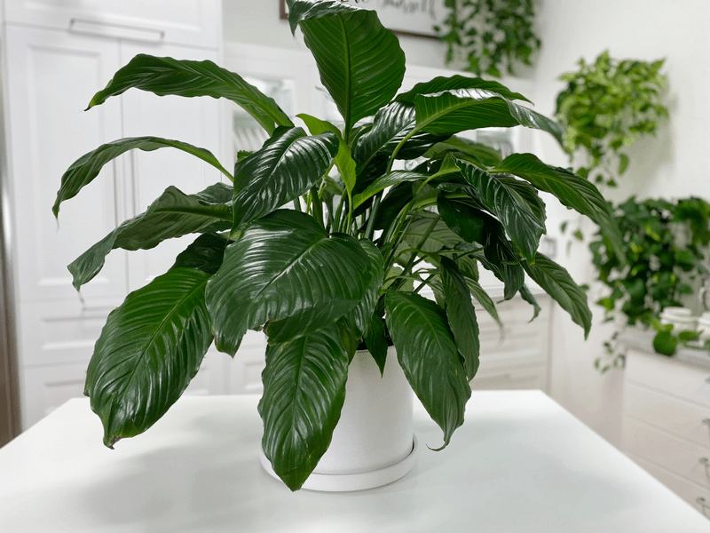
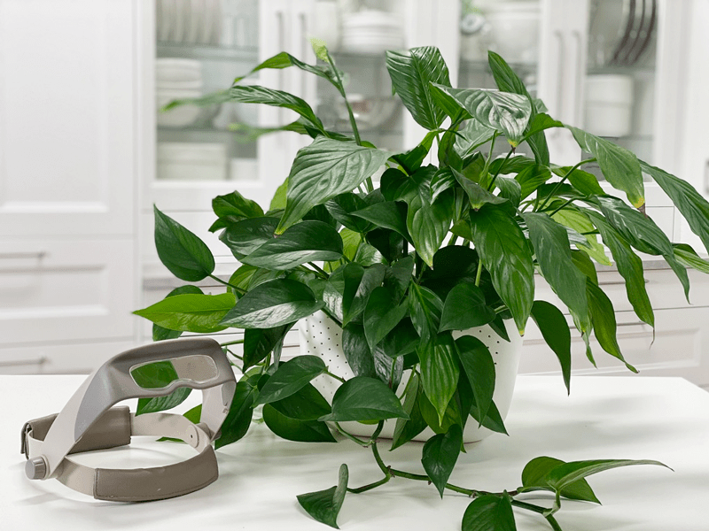
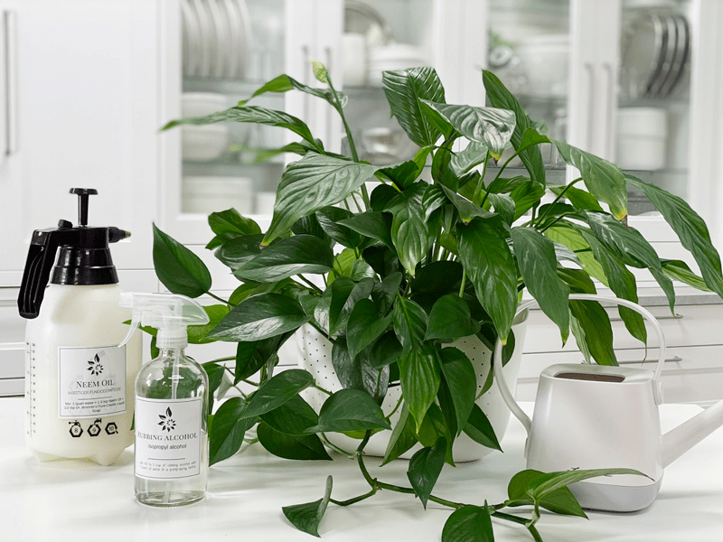

Peace Lily Plant | Care Difficulty – Moderate
These plants are trendy for a good reason: they can tolerate just about any location in your home, they are killer air purifiers, and let’s just say… they’re gorgeous. Their deep green foliage is what makes this an interior design anchor and a must-have for aesthetically minded people… (me!)

Here is my large Peace Lily that sits on the floor. Gave me a workout just to carry it into the studio to take a photo.
Though it is not a true lily, it still has beautiful white flowers, which are a combination of the white modified leaf or hood and the spadix, the spike of small flowers. The flowers give the plant its name since the white flowers resemble white flags of surrender. Which, reminds me, Peace Lily’s are also known as Flag Plants. Here’s a good thing to know… in time the spike of small flowers start to drop pollen. At first glance, you might have a freakout moment that your plant is infested with mealy bugs. Rest assured, it’s not.

Here is a variegated peace lily that is bunking with a pothos plant. The two have become good friends!
Light
Peace Lily’s are incredibly adaptable to a wide range of indirect light (low to bright). The more indirect light the Peace Lily gets, the more it will bloom. Avoid placing it in direct sunlight. I have three peace Lily’s. I have two in my studio that doesn’t have much for indirect light, so I lean on the florescent lights. They’re doing wonderfully. (see photo). I have a HUGE one in my living room that receives Northern indirect light. Except, I have it tucked on the left side of our fireplace, so the lighting is even less. It, too, is doing wonderful.

I have this peace lily hunkering down with a pothos plant. Together, they are doing really well.
Water
These plants need to have consistently moist soil, but never let it sit in standing water. It will droop alarmingly when you miss a watering, but don’t worry – it will recover in a matter of hours once you water it. I tend to water mine more than any other plant. Peace lilies are tropical, evergreen plants that thrive on the forest floor, where they receive dappled sunlight and consistent moisture. Replicating these conditions in the home is the key to getting your peace lily to be happy and healthy.
Temperature
Peace Lilies will grow in most household temperatures ranging from 60-80 degrees (F), but they do not like the temperature to drop below 50 degrees (F). Me either, makes me shiver just thinking about it. Keep them away from drafts, air vents, doorways during the winter months. During the summer, if you run an air conditioner, be sure to move them away from those drafts too.
Fertilizer
In the growing season, fertilize once a month with a complete liquid fertilizer, 1/2 strength of recommended dilution. This is especially important when the plant is blooming. My plant blooms even in the winter (I live in the PNW), so I like to give it a little food maybe every 4-6 weeks.
Additional Care
- Remove any dead, discolored, damaged, or diseased leaves and stems as they occur with clean, sharp scissors. I use the watering time to inspect my plants thoroughly.
- Clean the leaves often enough to keep dust off of them.
- Peace Lilies are naturally shiny & don’t need any kind of leaf shine. It blocks their pores & hinders the respiration process. I sprayed diluted Dr. Browner’s soap onto a wet, soft cloth & wiped each leaf. It brings out the natural shine of this plant. By keeping the leaves clean, you increase photosynthesis and reduce the chance of insects bugging them (pun intended haha).

Plant Characteristics to Watch For
Diagnosing what is going wrong with your plant is going to take a little detective work, but more so… patience! First of all, don’t panic and don’t throw a plant out prematurely. Take a few deep breaths and work down the list of possible issues. Below, I am going to share some typical symptoms that can arise. When I start to spot troubling signs on a plant, I take the plant into a room with good lighting, pull out my magnifiers, and begin by thoroughly inspecting the plant.
The leaves are drooping.
- This is a sure sign that it needs a good drink of water.
- Solution – Water the poor thing.
My plant has some yellow leaves.
- Yellow leaves may be caused by overwatering, underwatering, or old age (of the leaf).
- Solution – Check the watering schedule and adjust as needed. Remove the yellow leaves, cutting all the way at the center of the plant.
My plant has some brown leaves.
- This is typically due to a lack of water.
- Solution – Keep the soil moist but not drenched. Make sure the pot it is planted in has drain holes. Remove the brown leaves, cutting all the way at the center of the plant.
Leaf tips turning brown.
- The cause is likely due to dry air and low humidity. Peace lilies are sensitive to chemicals commonly found in tap water, such as fluoride, which may cause brown leaf tips.
- Solution – Add a humidifier to the room. If it isn’t a humidification issue, switch to filtered, room-temperature water, if possible.
The leaves are brown edges.
- This is usually a sign that your peace lily has been getting direct sunlight.
- Solution – If that’s the case, move the plant out of sunbeams. If you don’t have another place to move it to, try hanging a sheer curtain in the window to soften the light coming in.
- Dark green/black spots on the leaves can be a sign of too much fertiliser.
- Solution – Flush the soil with fresh water and don’t feed again for 6 months.
The plant is losing its lower leaves.
- This can be a sign of dryness.
- Solution – Remove the dead leaves, water, and more will grow.
My plant isn’t producing flowers.
- Most often, if no flowers are appearing, the plant is not getting enough light. Peace lilies are very tolerant of low light, but low light doesn’t mean no light!
- Solution – To encourage flowering, move the plant to a brighter location, where it will receive bright, indirect light.
My plant is producing green-tinged flowers
- Green flowers can be caused by improper fertilizing.
- Solution – In the case of green flowers, cut back on fertilizing. In the case of weak-looking flowers or a lack of flowers, try switching to a fertilizer made for flowering plants. This type of fertilizer will have a higher amount of phosphorous, which plants need for blooming.
The flowers are brown.
- This just means that they are done and can be snipped off with scissors.
- Solution – Cut the flowers off and discard them in the trash. Go as far down the flower stem as you can into the leaf stem & cut there. Be sure to wash the scissors and your hands before moving on to another task.

Common Bugs to Watch For
If you want to have healthy house plants, you MUST inspect them regularly. Every time I water a plant, I give it a quick look-over. Bugs/insects feeding on your plants reduces the plant sap and redirects nutrients from leaves. Some chew on the leaves, leaving holes in the leaves. Also watch for wilting or yellowing, distorted, or speckled leaves. They can quickly get out of hand and spread to your other plants.
If you see ONE bug, trust me, there are more. So, take action right away. Some are brave enough to show their “faces” by hanging out on stems in plan site. Others tend to hide out in the darnedest of places, like the crotch of a plant or in a leaf that has yet to unfurl.
- Mealybugs look like small balls of cotton. They can travel, slooooooowly, but they have a strong will and determination! Though its slow movement, if any plant is touching another, there is a chance the mealybug will hitch a ride on a new leaf and spread. They breed like rabbits of the insect world. Females can deposit around 600 eggs in loose cottony masses, often on the underside of leaves or along stems.
- INTERESTING NOTE – as the flowers age, the pollen falls from the flower and lands on stems or leaves below. It can be easy to mistake them for insects. (raises hand) This happened to me. After a minor freak-out, I grabbed the magnifiers and identified the white specs as pollen, not bugs. Shew!
- Spider mites are more common on houseplants. They are not insects – they are related to spiders. These appear to be tiny black or red moving dots. Spider mites are nearly naked to the eye. You often need a magnifying lens to spot them, or you may just notice a reddish film across the bottom of the leaves, some webbing, or even some leaf damage, which usually results in reddish-brown spots on the leaf.
-

-

Dividing a Plant
Eventually, the peace lily may grow too large for its pot, at which point it can be divided. Remove the plant from its pot and split it into smaller plants, be sure to leave several leaves per clump. The peace lily grows from rhizomes so that it can tolerate a bit of tough treatment during dividing. Make sure to use well-draining, all-purpose potting soil.
Toxicity
All parts of the peace lily plant contain calcium oxalate—a substance that may cause stomach and respiratory irritation if ingested in large amounts. Keep peace lilies out of reach of small children and pets.
© AmieSue.com